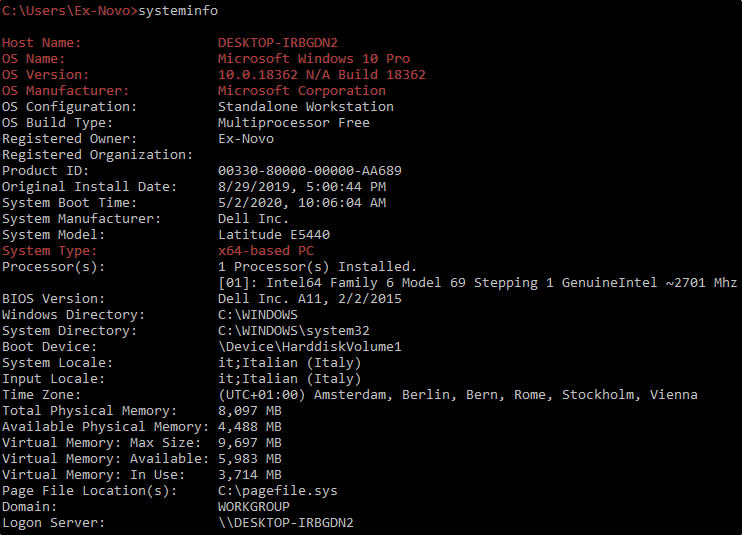

System Enumeration
Once we are into a Windows Machine, we can try to enumerate even more the target machine
A nice command to get started is getsysteminfo

We can use some one liner to have a more precise view:
systeminfo | findstr /B /C:"OS Name" /C:"OS Version" /C:"System Type"

Another thing we can do is to check the patching level:
We can do that with Windows Management Instrumentation, we will search for
Quick Fix Engineering .
(KBID stand for Knowledge Based ID)

Even here we can do a useful oneliner to grep the output:
qfe get Caption,Description,HotFixID,InstalledOn

We can even list the drives, always using wmic logicaldisk:
The output is really messy, so we better grep it.
wmic logicaldisk get Caption,Description,ProviderName